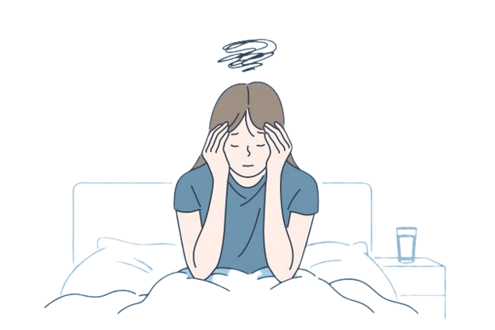
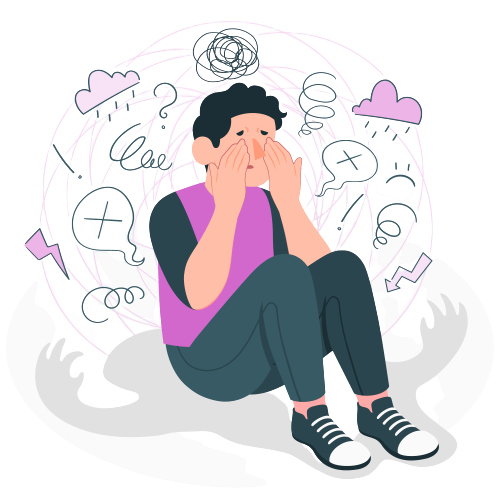
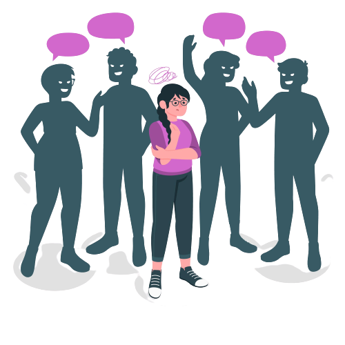
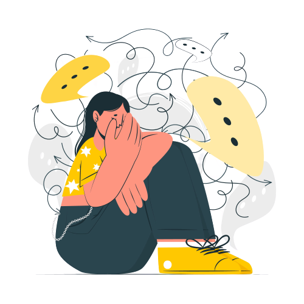

Existen varios tipos de trastornos de ansiedad:
Es un tipo de trastorno de ansiedad en el que temes a lugares y situaciones que pueden causarte pánico o hacerte sentir atrapado, indefenso o avergonzado y a menudo intentas evitarlos.
Incluye síntomas de ansiedad o pánico intensos que son directamente causados por un problema de salud físico.
Se caracteriza por una ansiedad y una preocupación persistentes y excesivas por actividades o eventos, incluso asuntos comunes de rutina. La preocupación es desproporcionada con respecto a la situación actual, es difícil de controlar y afecta la forma en que te sientes físicamente. A menudo sucede junto con otros trastornos de ansiedad o con la depresión.
Implica episodios repetidos de sensaciones repentinas de ansiedad y miedo o terror intensos que alcanzan un nivel máximo en minutos (ataques de pánico). Puedes tener sensaciones de una catástrofe inminente, dificultad para respirar, dolor en el pecho o latidos rápidos, fuertes o como aleteos (palpitaciones cardíacas). Estos ataques de pánico pueden provocar que a la persona le preocupe que sucedan de nuevo o que evite situaciones en las que han sucedido.
Es una incapacidad constante que tienen los niños para hablar en ciertas situaciones, como en la escuela, incluso cuando pueden hablar en otras situaciones, como en el hogar con miembros cercanos de la familia. Esto puede afectar el desempeño en la escuela, el trabajo o en la sociedad.
Es un trastorno de la niñez que se caracteriza por una ansiedad que es excesiva para el nivel de desarrollo del niño y que se relaciona con la separación de los padres u otras personas que cumplen una función paternal.
Implica altos niveles de ansiedad, miedo o rechazo a situaciones sociales debido a sentimientos de vergüenza, inseguridad y preocupación por ser juzgado o percibido de manera negativa por otras personas.
Se caracterizan por una notable ansiedad cuando la persona se ve expuesta a un objeto o situación específicos, y un deseo por evitarlos. En algunas personas, las fobias provocan ataques de pánico.
Se caracteriza por síntomas de ansiedad o pánico intensos que son el resultado directo del uso indebido de drogas, como tomar medicamentos, estar expuesto a una sustancia tóxica o tener abstinencia a causa de las drogas.